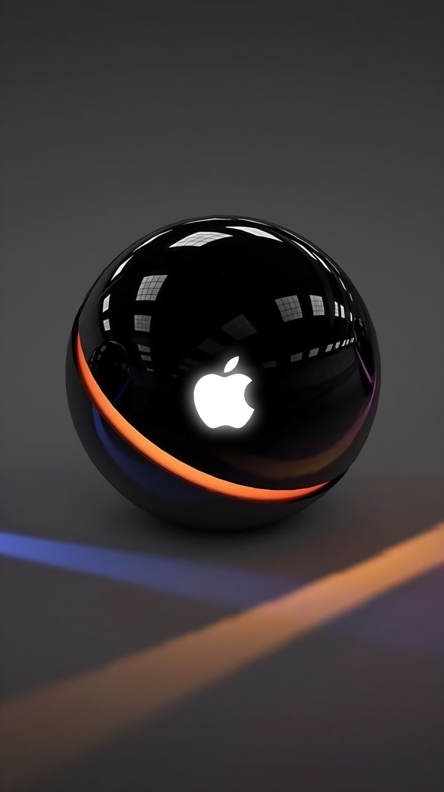

Miss Fondos
Pagina en fase beta
Las imagenes pueden demorar en cargar ya que tienen una calidad elevada.




No recomiendo usar estas imagenes para uso comecial ya que pueden estar protegidas por derechos de autor, pero si este no es tu caso puedes descargar todas las imagenes que te plasca sin ningun inconveniente.